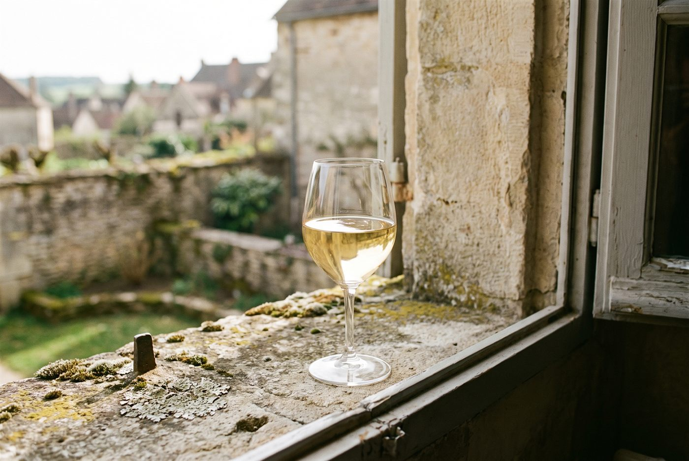

Les domaines · Côte de Beaune · Meursault
15
Meursault · Côte de Beaune
Domaine Jobard-Morey
Des Meursault de vieilles vignes, riches mais tendus, encore confidentiels.

Ambiance de Meursault
Fondé en 1949 à Meursault, le domaine est né de l'union d'un Jobard et d'une Morey au lendemain de la Seconde Guerre mondiale. Valentin Jobard, cousin d'Antoine et de Rémi Jobard et formé chez Vincent Dureuil-Janthial puis Bernard Bouvier, s'y est impliqué dès 2013 et en a pris la direction en 2016. Ses quelque 5,5 hectares, plantés pour une bonne part de vieilles vignes d'après-guerre, se concentrent sur Meursault, avec les premiers crus Charmes et Poruzot et les lieux-dits Les Narvaux et Les Tillets, élevés en fûts avec un bois neuf mesuré.
Blancs
- Cépage · Chardonnay0,33 ha dans l'un des premiers crus les plus réputés de Meursault, côté Puligny.
- Cépage · Chardonnay0,50 ha au centre de la commune, premier cru à la fois riche et tendu.
- Cépage · Chardonnay0,83 ha sur ce lieu-dit réputé du haut du coteau, aux sols maigres et calcaires.
- Cépage · Chardonnay0,45 ha sur un lieu-dit d'altitude, apprécié pour sa fraîcheur.
- Cépage · Chardonnay0,55 ha de vignes villages, cuvée d'entrée dans l'univers du domaine.
- Cépage · ChardonnayPetite parcelle située derrière le Clos des Perrières, à Meursault.
- Cépage · Aligoté
Rouges
- Cépage · Pinot noirUn Meursault rouge devenu rare, que le domaine continue de produire.
Ces cuvées vous parlent ?
Demander les disponibilités